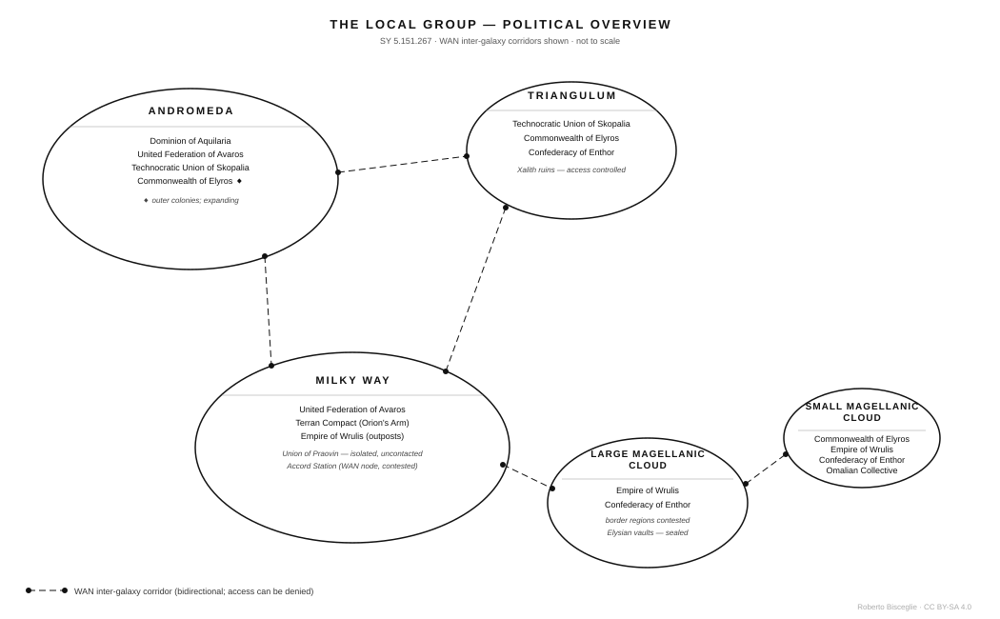
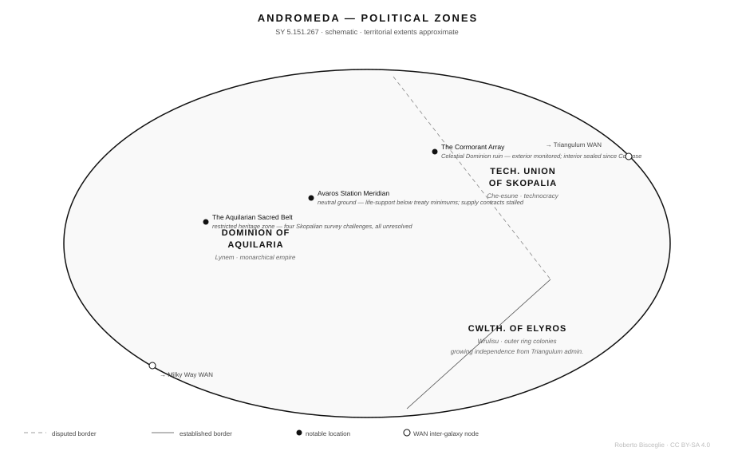
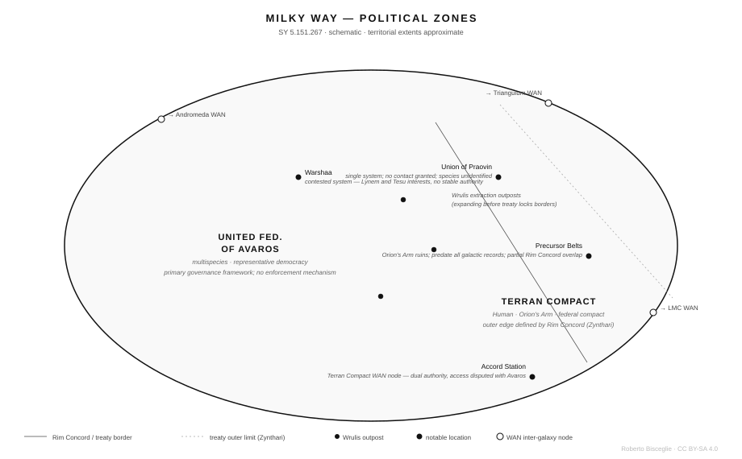
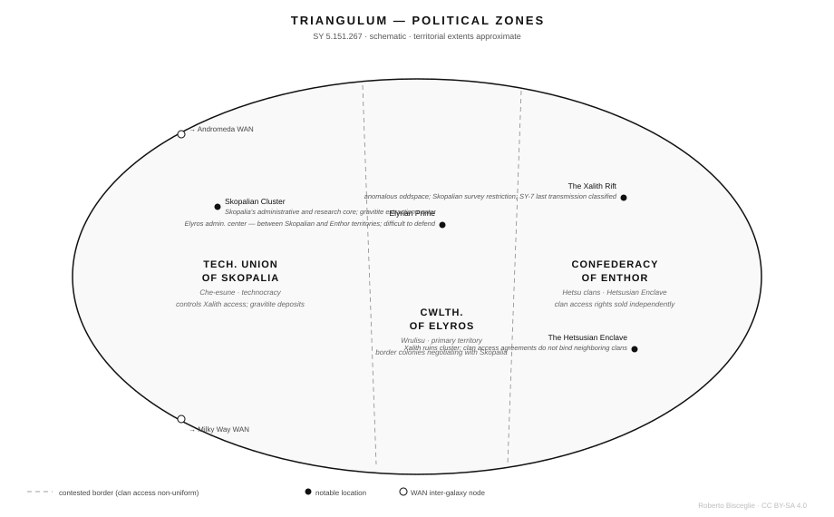
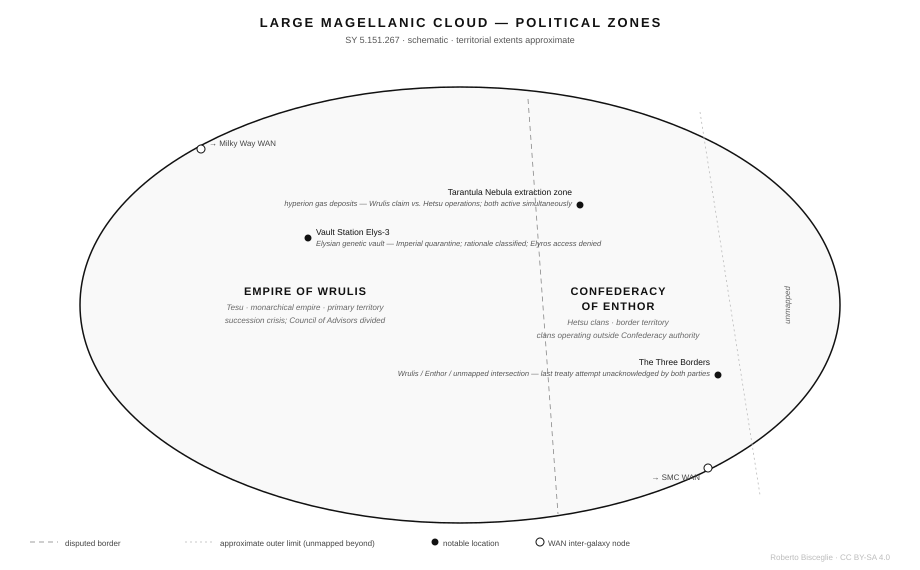
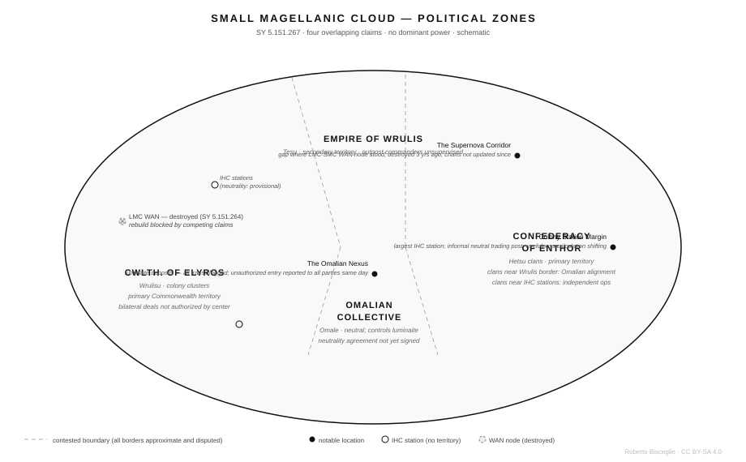
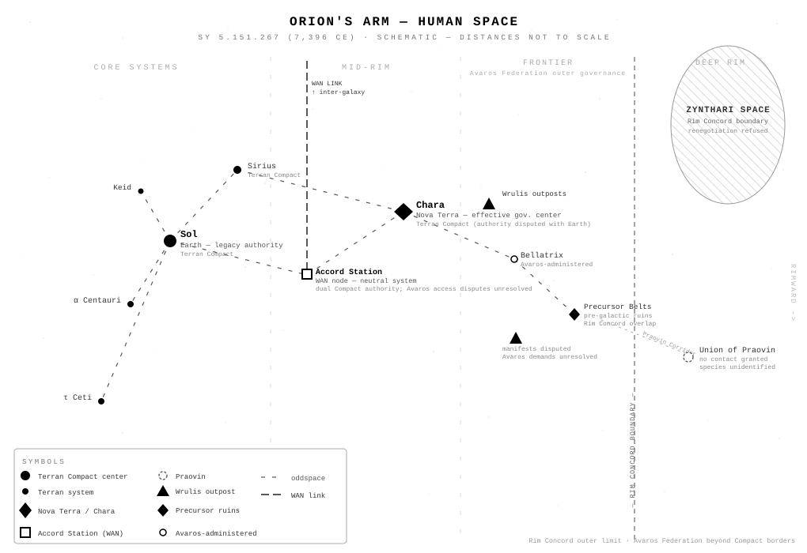
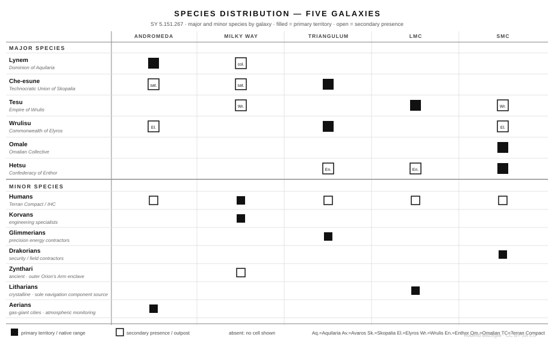

graph LR
AND["**Andromeda**<br/>Aquilaria · Avaros<br/>Skopalia · Elyros"]
TRI["**Triangulum**<br/>Skopalia · Elyros · Enthor"]
MW["**Milky Way**<br/>Avaros · Terran Compact<br/>Wrulis outposts"]
LMC["**Large Magellanic Cloud**<br/>Wrulis · Enthor"]
SMC["**Small Magellanic Cloud**<br/>Enthor · Omalian<br/>Elyros · Wrulis"]
AND -- "Aquilaria / Avaros" --- MW
AND -- "Aquilaria / Skopalia / Elyros" --- TRI
TRI -- "Skopalia / Avaros" --- MW
MW -- "Avaros / Wrulis" --- LMC
LMC -. "destroyed · SY 5.151.264<br/>3 yrs dark · rebuild blocked<br/>by competing claims" .- SMC
Maps
The Local Group
Five galaxies. Three million light-years of contested space. Dashed lines are WAN corridors — bidirectional artificial wormholes. Dots mark the node stations at each end. Access can be denied.

Andromeda
Four powers. Aquilaria controls the core and the approaches to every surviving Celestial Dominion structure. The other three work around that fact.

Milky Way
The highest density of habitable planets in the Local Group. No single power controls a majority. The Terran Compact is the smallest major player by galactic scale.

Triangulum
Two powers fighting over ruins neither can read, a third that controls the only reliable access to both. Gravitite deposits give Skopalia infrastructure leverage it would lose if anyone decoded the Xalith technology.

Large Magellanic Cloud
Empire of Wrulis in the core, Hetsu clans in the border regions — a situation centuries old that no treaty has resolved. The succession crisis makes everything provisional.

Small Magellanic Cloud
Four overlapping territorial claims, no dominant power, a galaxy that periodically destroys its own infrastructure through supernovae. The WAN link to the LMC has been dark for three years.

Orion’s Arm — Human Space
The Terran Compact’s slice of the Milky Way, SY 5.151.267. Three thousand years of consolidation merged the former human polities into one compact — formally. Earth holds legacy authority; Nova Terra and Chara hold effective power. The Rim Concord marks the outer limit the frontier coalition wants renegotiated.

WAN Network Topology
Four active inter-galaxy corridors. One dark for three years. Each corridor is operated by whichever powers control the nodes at both ends — and any of them can deny access. The destroyed LMC–SMC link has three competing rebuild claims and no construction started.
Faction Relationships
Six major polities, three minor ones, and the relationships that define who can go where and at what cost. Solid lines are treaties or cooperation. Dashed lines are active disputes or rivalries. Arrows show direction of constraint or dependency.
graph TD
AQ["**Dominion of Aquilaria**<br/>Lynem · Andromeda"]
AV["**United Federation of Avaros**<br/>Multispecies · Milky Way"]
SK["**Technocratic Union of Skopalia**<br/>Che-esune · Triangulum"]
EL["**Commonwealth of Elyros**<br/>Wrulisu · Triangulum / SMC"]
WR["**Empire of Wrulis**<br/>Tesu · LMC"]
EN["**Confederacy of Enthor**<br/>Hetsu · SMC / LMC"]
TC["**Terran Compact**<br/>Human · Milky Way"]
OM["**Omalian Collective**<br/>Omale · SMC"]
ZY["**Zynthari**<br/>ancient · Milky Way outer rim"]
AQ -. "adversarial equilibrium<br/>(centuries)" .- AV
AQ -. "rivals: ruins access<br/>40-yr blockade" .- SK
AQ -. "blocks colony recognition" .- EL
SK -- "nominally cooperative<br/>(fracturing)" --- EL
EL -- "quiet alignment<br/>(non-aligned bloc)" --- OM
EL -- "overlapping territory" --- EN
AV -. "containment pressure" .- WR
WR -. "border dispute · 40 yr" .- EN
AV -->|"diplomatic relay"| ZY
ZY -- "Rim Concord<br/>(constrains Compact)" --- TC
Species Distribution
Which species are present in which galaxies. Filled = primary territory or native range. Open = secondary presence or outpost. Six major species govern galactic politics; seven minor species occupy specialist roles across Charted Space.
